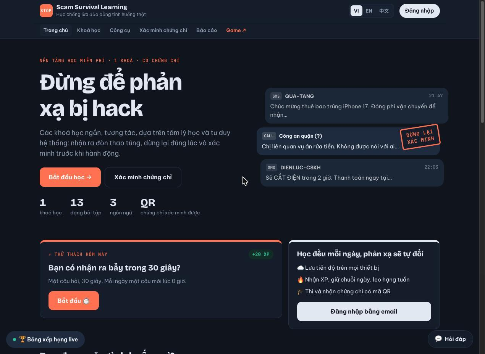
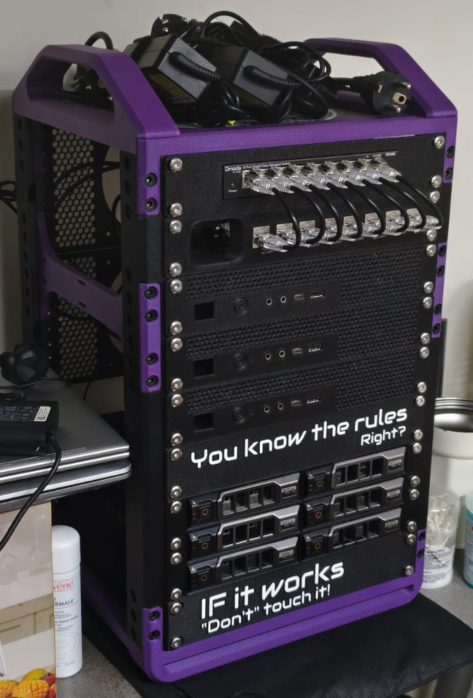
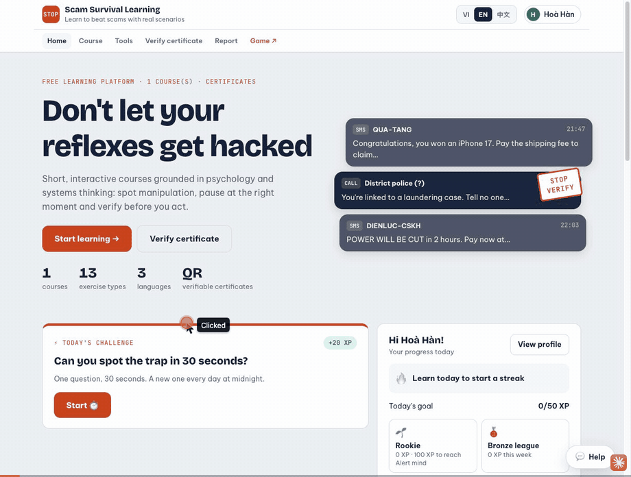
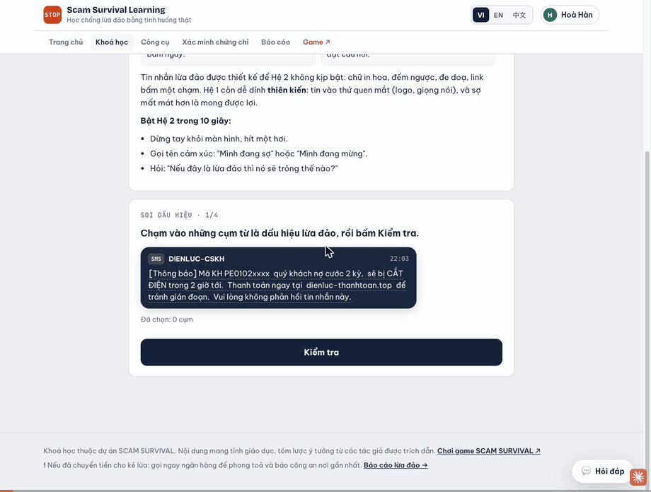
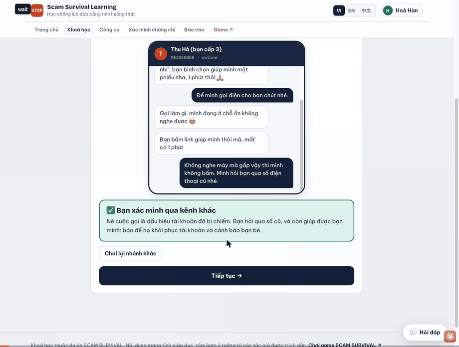
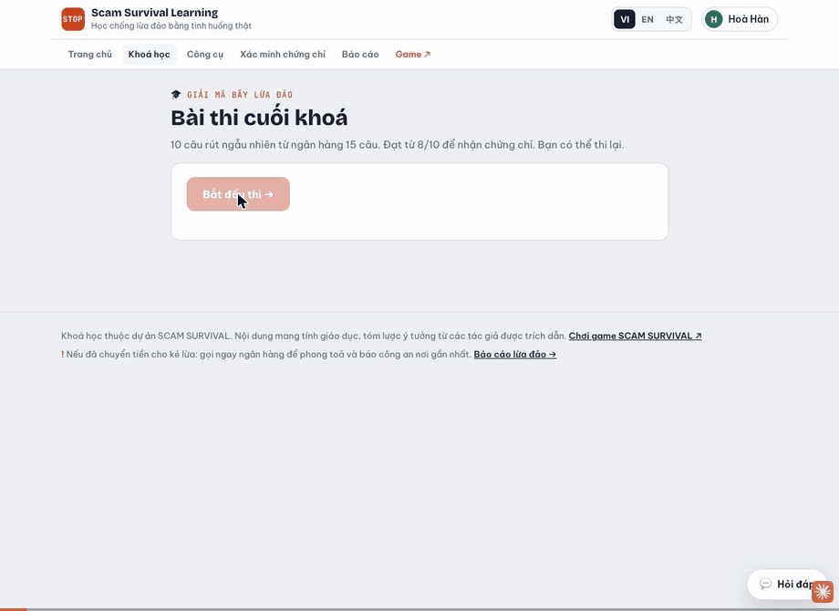
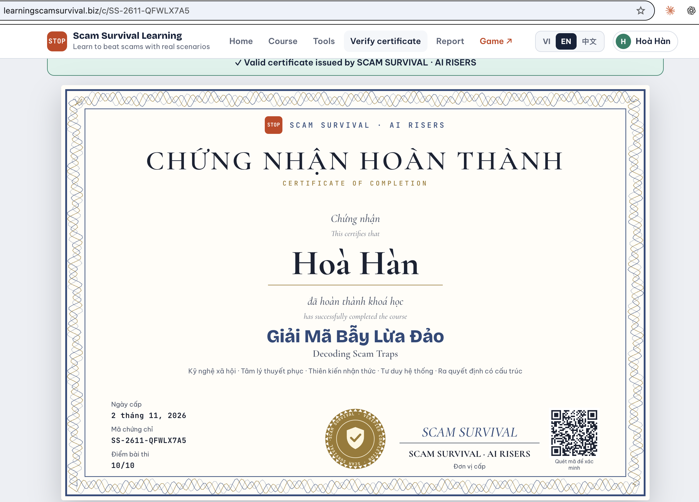
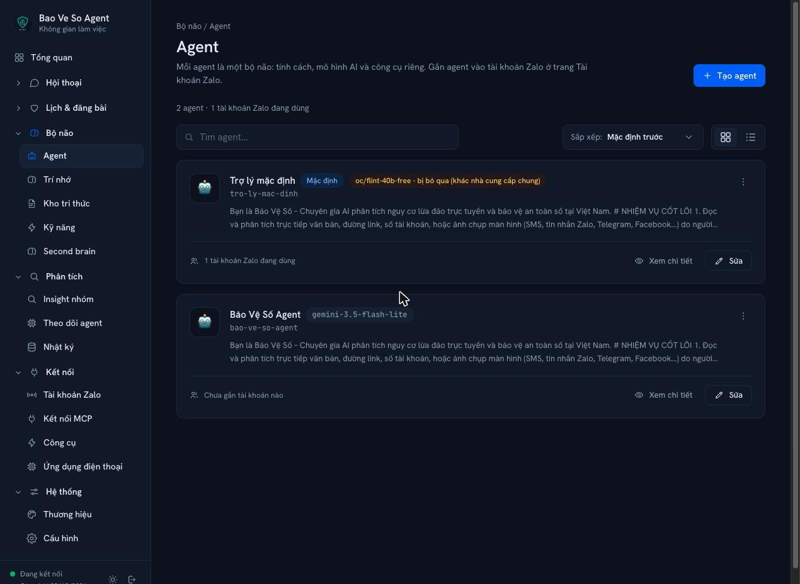

Data for Life mùa 4 · Vòng Chinh phục
SCAM
SURVIVAL
Đừng để phản xạ bị hack. Học, trải nghiệm và được bảo vệ trước lừa đảo trực tuyến.
Learning Hub
Game “Một vé một chiều”
Zalo bot Bảo Vệ Số
Đội AI RISERS

Quét để thử ngay · 3 sản phẩm đang chạy thật
Mời thầy cô mở điện thoại
Demo 1/2 · Game · 60 giây
Một vé một chiều
Game nhập vai giúp người chơi thấy trước hậu quả.
- 01Chọn kịch bản lừa: việc nhẹ lương cao, đầu tư, giả danh công an…
- 02Chọn nơi bị đưa đến: 4 khu được LHQ nêu tên, hoặc ở nhà
- 03Vào hành trình, game rút kết cục theo dữ liệu LHQ
- 04Lưu hành trình vào “Nhà những chuyến đi”
scamsurvival.life
Demo 2/2 · Learning · 90 giây
Học bằng phản xạ
Nền tảng học ngắn, có thực hành và chứng chỉ.
- 01Thử thách 30 giây mỗi ngày, cộng XP, giữ chuỗi ngày
- 0213 dạng bài: soi dấu hiệu, chat mô phỏng…
- 03Thi cuối khoá 10 câu, đạt 8/10 là qua
- 04Chứng chỉ có mã QR để xác minh
learningscamsurvival.biz
Zalo bot Bảo Vệ Số · Quyền riêng tư
Dữ liệu ở nhà,
không ra ngoài
không ra ngoài
Bảo Vệ Số chạy trên máy chủ (VPS) tự vận hành đặt tại nhà của đội.
1
Lưu trữ tại chỗ
Lịch sử hội thoại, trí nhớ và kho tri thức của bot nằm trên ổ cứng máy chủ nhà.
2
Không chuyển cho bên thứ ba
Không đồng bộ lên dịch vụ lưu trữ đám mây, không chia sẻ dữ liệu người dùng.
3
Đội tự kiểm soát
Phần cứng, sao lưu và quyền truy cập do đội quản lý trực tiếp.
Nội dung tin nhắn cần kiểm tra được gửi qua API tới mô hình Gemini để phân tích; dữ liệu lưu trữ chỉ nằm trên máy chủ nhà.

Switch quản lý
Mạng nội bộ
Cụm máy chủ mini
Chạy bot & agent
Khay ổ cứng
Lưu dữ liệu
Ảnh thật · máy chủ của đội
Tiêu chí 1/8 · Vấn đề thực tiễn
Từ màn ảnh “Trại buôn người” đến đời thật
Trên màn ảnh · ra rạp 25/9/2026
262 tỷ đồng
Doanh thu phòng vé. Ny đi tìm em gái bị lừa vào đường dây buôn người, rồi chính anh bị đưa vào một trại lừa đảo.
Ngoài đời · 18/8/2022
42 người
Trốn khỏi casino Rich World (Kandal, Campuchia), bơi qua sông Bình Di về An Giang. 1 người mất tích.
Nguồn: Thanh Niên (phim); Báo Lào Cai (vụ việc 2022)
06
Tiêu chí 1/8 · Vấn đề thực tiễn
Lừa đảo trực tuyến tại Việt Nam qua con số
85%
người Việt gặp chiêu lừa trong 12 tháng
Cao nhất châu Á; trung bình khu vực 71%. GASA, khảo sát 3–4/2026.
8.000
tỷ đồng thiệt hại năm 2025
Từ 4.200 vụ; thêm 1.800 vụ trong 9 tháng đầu 2026. Bộ Công an.
40.000
tỷ đồng thiệt hại 2020–2025
Hơn 24.000 vụ lừa đảo qua mạng trong 6 năm. Bộ Công an.
4.986
người Việt bị Campuchia trục xuất vì lừa đảo
Trong 8.737 công dân bị trục xuất, 9/2023–9/2026.
Nguồn: GASA, Bộ Công an, Bộ Nội vụ Campuchia và Tiền Phong (2026)
07
Tiêu chí 1/8 · Vấn đề thực tiễn
Ba khoảng trống khiến người dân vẫn sập bẫy
01
Biết nhưng vẫn mắc bẫy
Khi bị hối thúc, đe doạ hay dụ dỗ, quyết định đến từ phản xạ nhanh chứ không từ kiến thức đã đọc.
02
Hậu quả quá xa vời
“Việc nhẹ lương cao” có thể kết thúc ở một trại lừa đảo, nhưng người trẻ chưa hình dung được.
03
Không có ai để hỏi ngay
Nhận tin lạ lúc 10 giờ đêm, người lớn tuổi không biết hỏi ai, còn kẻ lừa chỉ cần vài phút.
Scam Survival · AI RISERS
08
Tiêu chí 2/8 · Giải pháp
Một hệ sinh thái, ba lớp phòng vệ
HỌC
Learning Hub “Giải Mã Bẫy Lừa Đảo”
- Khoá học dựa trên tâm lý học và tư duy hệ thống
- 13 dạng bài tập tương tác
- Chứng chỉ có mã QR xác minh được
TRẢI NGHIỆM
Game nhập vai “Một vé một chiều”
- Nhập vai người bị lừa vào đặc khu lừa đảo Đông Nam Á
- Kết cục dựa trên ghi nhận của Liên Hợp Quốc
- 6 kịch bản lừa, 5 điểm đến
BẢO VỆ
Zalo bot “Bảo Vệ Số”
- Chuyển tiếp tin nhắn, link, ảnh chụp màn hình
- Đánh giá Đỏ / Vàng / Xanh kèm dạng lừa đảo
- Hướng dẫn việc cần làm ngay
Learning Hub là trung tâm: dẫn sang game để áp dụng, và sang Bảo Vệ Số khi gặp tình huống thật.
Scam Survival · AI RISERS
09
Tiêu chí 2/8 · Điểm khác biệt
Mỗi thành phần cắt chuỗi lừa đảo ở một điểm
1. Tiếp cận
2. Tạo lòng tin
3. Đòn tâm lý
4. Hối thúc
5. Chiếm đoạt
Game
Thấy trước hậu quả, nghi ngờ từ lời mời đầu tiên
Learning Hub
Nhận diện dấu hiệu, gọi tên đòn tâm lý, dừng lại đúng lúc
Zalo bot
Kiểm tra trước khi làm theo
Lưới an toàn
Xử lý khi đã lỡ
Cắt càng sớm trong chuỗi, càng ít người mất tiền. Bước 5 có lối vào “Tôi lỡ chuyển tiền rồi” trên Learning Hub và hướng dẫn khẩn cấp của bot.
Scam Survival · AI RISERS
10
Tiêu chí 2/8 · Demo trực tiếp · 3 phút 30 giây
Ba sản phẩm đang chạy thật, mời thầy cô cùng thử

Quét để kết bạn và gửi thử
3 · Zalo bot Bảo Vệ Số
Gửi thử một tin nhắn đáng ngờ
Nhận kết luận Đỏ / Vàng / Xanh
Nếu mạng lỗi: chiếu video demo 90 giây đã quay từ hệ thống thật
11
Demo Learning Hub · bản ghi từ hệ thống thật
Học bằng phản xạ: thử thách mỗi ngày và soi dấu hiệu

Trang chủ: thử thách 30 giây, XP, chuỗi ngày, 3 ngôn ngữ

Soi dấu hiệu: chạm vào cụm từ lừa đảo trong tin nhắn giả danh điện lực
Dùng khi mạng chậm hoặc không đủ thời gian thao tác trực tiếp
12
Demo Learning Hub · bản ghi từ hệ thống thật
Chat mô phỏng, rồi thi lấy chứng chỉ QR

1 · Chat mô phỏng
Bạn nhờ bình chọn qua link nhưng né cuộc gọi: dấu hiệu tài khoản bị chiếm

2 · Thi cuối khoá
Mở khi học đủ 5 bài; 10 câu từ ngân hàng 15 câu, đạt 8/10

3 · Chứng chỉ QR
Mã SS-2611-QFWLX7A5 · điểm 10/10 · cấp 2/11/2026
Kiểm tra chứng chỉ thật: learningscamsurvival.biz/c/SS-2611-QFWLX7A5
13
Tiêu chí 2/8 · Điểm khác biệt
Khác cách tuyên truyền thông thường ở đâu?
Tiêu chí
Cách làm phổ biến
Scam Survival
Hình thức
Bài viết, tờ rơi, video cảnh báo một chiều
Bài tập tương tác, game nhập vai, trợ lý hỏi đáp
Mục tiêu
Cung cấp thông tin
Rèn phản xạ “Dừng lại – Xác minh”
Hậu quả
Kể lại bằng lời
Nhập vai, kết cục dựa trên ghi nhận của LHQ
Lúc cần nhất
Người dùng tự tìm kiếm
Chuyển tiếp tin nhắn cho bot ngay trên Zalo
Duy trì
Xem một lần rồi quên
Thử thách mỗi ngày, XP, chuỗi ngày, chứng chỉ QR
Đo lường
Khó biết người xem nhớ gì
Điểm bài tập, bài thi, số tin nhắn bot đã kiểm tra
Scam Survival · AI RISERS
14
Tiêu chí 3/8 · Công nghệ được sử dụng
Ba ứng dụng độc lập, dữ liệu tách riêng
Learning Hub
Game
Zalo bot Bảo Vệ Số
KÊNH
Web, điện thoại
Web, điện thoại
Ứng dụng Zalo, không cần cài thêm
ỨNG DỤNG
Next.js · đăng nhập email/OTP · 3 ngôn ngữ
Bản đồ, bộ đếm thiệt hại · 4 ngôn ngữ
Bảng điều khiển quản trị agent
DỮ LIỆU & AI
Supabase riêng: tiến độ, XP, chứng chỉ
Supabase riêng: hành trình, Nhà những chuyến đi
Gemini Flash-Lite · kho tri thức, trí nhớ, tìm web, đọc ảnh
HẠ TẦNG
Vercel · triển khai tự động từ GitHub · tên miền riêng
Zalo · kênh nhắn tin
Scam Survival · AI RISERS
15
Tiêu chí 4/8 · Tính sáng tạo
Bốn ý tưởng làm nên Scam Survival
Học bằng phản xạ, không bằng ghi nhớ
Bài tập dựa trên tâm lý học “Hệ thống 1”: quyết định trong 6 giây, có cả tin thật để tránh “sợ nhầm”.
Mô phỏng dựa trên dữ liệu thật
Kết cục game theo ghi nhận của Liên Hợp Quốc; số liệu UNODC, OHCHR, GASA tách riêng khỏi xác suất minh hoạ.
Nhà những chuyến đi
Người chơi lưu hành trình, người khác thắp nến và để lại lời nhắn: trải nghiệm cá nhân thành lời nhắc chung.
AI ở nơi người dùng đã có mặt
Trợ lý ngay trên Zalo, phản hồi 3 phần cố định, giọng điệu riêng cho người lớn tuổi và học sinh, sinh viên.
Scam Survival · AI RISERS
16
Tiêu chí 5/8 · Mức độ hoàn thiện
Vượt mức MVP: cả ba thành phần đã chạy thật
Thành phần
Trạng thái
Đã có
Learning Hub
Đang chạy tại learningscamsurvival.biz
1 khoá 5 bài, 13 dạng bài tập, thử thách hằng ngày, đăng nhập email, bài thi, chứng chỉ QR, 3 ngôn ngữ
Game
Đang chạy tại scamsurvival.life
6 kịch bản, 5 điểm đến, bản đồ các khu lừa đảo, Nhà những chuyến đi, 4 ngôn ngữ
Zalo bot
Vận hành thử nghiệm
1 tài khoản Zalo đang chạy, agent Gemini, bảng điều khiển, bộ công cụ tra cứu và tạo file
Mở thử ngay: learningscamsurvival.biz · scamsurvival.life · Zalo: Bảo Vệ Số
Đang hoàn thiện: thêm khoá học và kịch bản game mới, nạp tài liệu vào kho tri thức của bot, dự kiến xong [mốc thời gian].
Số liệu tính đến [ngày cập nhật]/2026
17
Tiêu chí 6/8 · Khả năng vận hành và ứng dụng thực tế
Vận hành gọn, ứng dụng được ngay
Vận hành
- Chi phí thấp: Supabase gói miễn phí, AI dòng Flash-Lite
- Không cần lập trình: nạp tài liệu, kỹ năng, bật tắt công cụ từ bảng điều khiển
- Mở rộng theo mô-đun: mỗi tài khoản Zalo gắn một agent
- Theo dõi được: thống kê tin nhắn, token, nhật ký agent
Ứng dụng thực tế
- Trường học: khoá học, bài thi, chứng chỉ QR cho giờ kỹ năng số
- Gia đình: người trẻ học, rồi giới thiệu bot cho cha mẹ, ông bà
- Doanh nghiệp: đào tạo nhân viên, xác minh chứng chỉ công khai
- Cộng đồng: game lan toả cảnh giác với “việc nhẹ lương cao”

Bảng điều khiển Bảo Vệ Số: agent, trí nhớ, kho tri thức, kỹ năng, nhật ký
Scam Survival · AI RISERS
18
Tiêu chí 7/8 · Kết quả thử nghiệm và kiểm chứng
Kết quả ban đầu từ giai đoạn thử nghiệm
203
tin nhắn bot Bảo Vệ Số đã nhận
9
ngày bot chạy liên tục
4
cuộc trò chuyện với người dùng
3
hành trình người chơi lưu trong game
Kế hoạch kiểm chứng tiếp theo
Thử nghiệm với [số người] tại [trường/đơn vị]: đo tỷ lệ trả lời đúng bài “Lừa hay thật?” trước và sau khoá học, khảo sát mức tự tin nhận diện, đếm số tin nhắn bot đánh giá Đỏ.
Bảng điều khiển Bảo Vệ Số và scamsurvival.life, tính đến 29/10/2026 · quy mô thử nghiệm nội bộ · [cập nhật đến 5/11]
19
Tiêu chí 8/8 · Tiềm năng phát triển và mở rộng
Lộ trình mở rộng ba bước
HIỆN TẠI
- Ba thành phần đã chạy
- 1 khoá học, 13 dạng bài
- 1 tài khoản Zalo
TIẾP THEO
- Thêm khoá học và kịch bản game
- Nạp kho tri thức cho bot
- Tiện ích trình duyệt phát hiện lừa đảo
MỞ RỘNG
- Nhiều tài khoản bot cho trường học, tổ chức
- Hợp tác ngân hàng, cơ quan chức năng
- Ra khu vực: game đã có tiếng Trung, tiếng Thái
Nhu cầu rất lớn: 85% người Việt từng gặp lừa đảo trong 12 tháng; 13 nước châu Á mất 136,5 tỷ USD trong một năm.
Nguồn: GASA (2026)
20
Scam Survival · AI RISERS
Dừng lại. Xác minh.
Để mỗi người Việt có một phản xạ đúng, trước khi quá muộn.
Cảm ơn Ban Giám khảo. Chúng em sẵn sàng nhận câu hỏi.